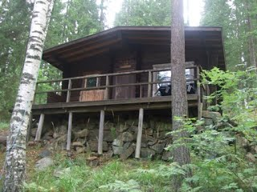
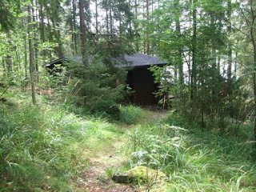

Kotkanpesä
Lauttapartion kämppä

KOTKANPESÄN ESITTELY
Kotkanpesä on saunalla varustettu erähenkinen hirsikämppä, idyllisen suolammen rannalla Karkkilassa. Kämppä sijaitsee Lauttapartion omistamalla kahden hehtaarin suuruisella tontilla. Sisätilat jakautuvat isoon huoneeseen jossa ovat laverit ja takka, sekä keittiöön ja saunaan. Kämpän etupuolella on myös tilava terassi, ilta-auringon suuntaan. Läheisyydessä sijaitsevat puuvaja, vessa ja nuotiopaikka. Nuotiopaikan vierestä löytyy myös telttapaikkoja. Kotkanpesän kompostoiva vessa valmistui kesällä 2003. Samassa yhteydessä hankittiin myös ympärivuoden toimiva lämpökompostori ruuantähteille ja kaminan tuhkille. Vuonna 1998 kämpälle johtanut noin kilometrin mittainen polku korvattiin mäkeen rakennetulla soratiellä.
KÄMPPÄFAKTAA
-
Valmistunut:
vuonna 1968
-
Sijainti:
Karkkilan lähistöllä
-
Etäisyydet
vajaan tunnin ajomatka Lauttasaaresta
-
Yhteydet:
linja-autolla Karkkilan keskustaan tai omalla autolla noin sadan metrin päähän (talvella noin 1 km)
-
Majoitustilaa:
lavereilla ja penkeillä noin kymmenelle aikuiselle
-
Lämmitys
puukamina ja takka
-
Valaisimet:
2 kpl. Aladdin lamppuja, myrskylyhtyjä
-
Keittiö:
kaasuliesi, astioita noin viidelletoista hengelle
-
Sauna:
puukiuas ja lämminvesipata, remontoitu vuonna 1998, toimii myös majoitustilana
-
Juomavesi:
kaivosta / lähteestä
KUNNOSSAPITO
Kotkanpesästä huolehtii Kämppätoimikunta kämpänisännän johdolla. Toimikunta järjestää kämpällä puutalkoot noin kerran vuodessa. Kämpänkäyttötoimikunta on viime vuosina uusinut muun muassa saunan, ison huoneen lattian, katon päällysteen, kämpän ja vajan puunsuojauksen, sekä kuistin laudoituksen. Tuoreimpia toimikunnan aikaansaannoksia ovat kompostoivan vessan rakentaminen, sekä laiturin jatko-osan ja lämpökompostorin hankkiminen.

VARAUKSET
Kolon ilmoitustaulun kämppävarauslistaan. Vapaita viikonloppuja voi myös kysellä kämpänisännältä, mutta varauksissa etusijalla ovat aina vartiot ja laumat. Lauttapartion Johtajaneuvoston päätöksellä kämppää ei vuokrata partion ulkopuolisille tahoille! Partiolippukunnille vuokraus onnistuu varaustilanteen mukaan. Partiolippukunnilta viikonlopun hinta on 70 euroa.
Kämpän avaimia ja varaustilannetta voi tiedustella kämpänisäntä Matti Tannerilta (puh. 0400 8811410)
HUOM!
Kämpältä poistuttaessa täytetään aina kämpänkäyttöraportti, jonka saa kämpänisännältä avaimien mukana. Vartion tai lauman retkellä on oltava mukana myös yli 16-vuotias kämppävastaava, jolla on kämppävastaavan koulutus.